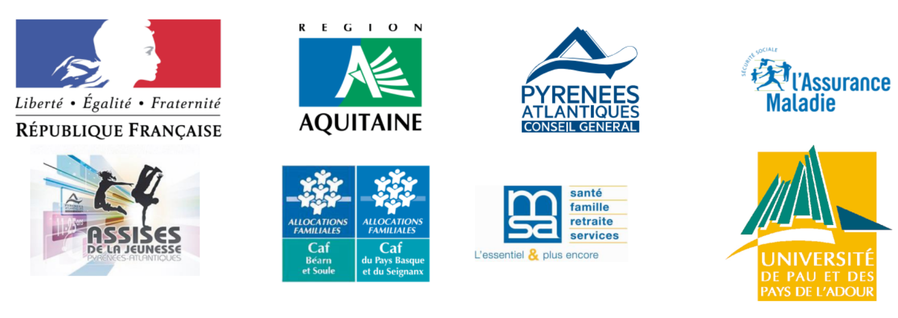

JEUNES6.4 est un dispositif issu de la charte de l’engagement pour la jeunesse signée en 2013 par des partenaires institutionnels...

...qui ont décidé de mettre en commun leurs actions pour les jeunes des Pyrénées-Atlantiques.